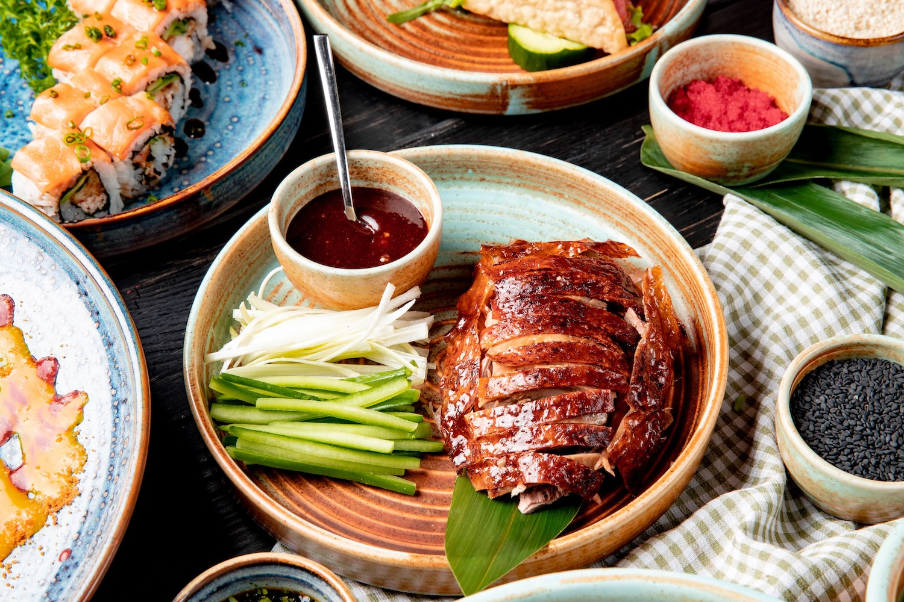
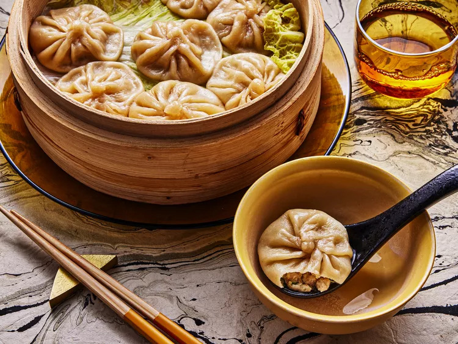
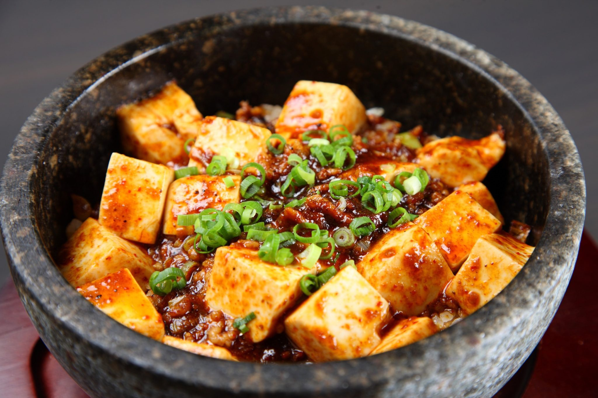

1. Peking duck
Peking Duck is a world-famous dish originating from Beijing, renowned for its thin, crispy skin and tender, flavorful meat. The duck is traditionally roasted over an open fire and the duck is sliced tableside, with the skin and meat served separately. It's paired with thin wheat pancakes, julienned spring onions, cucumber, and a rich sweet bean or hoisin sauce. . It’s a true delicacy that showcases the artistry of Chinese cuisine.
2. Xiaolongbao/Dumplings
Xiaolongbao, or soup dumplings, are a beloved specialty originating from Shanghai. These delicate dumplings feature a thin dough wrapper encasing a flavorful filling of minced pork and a rich, savory broth, created by adding gelatinized stock that melts during steaming. They are traditionally enjoyed with a dipping sauce of black vinegar and ginger.
While Xiaolongbao is perhaps the most famous type, Chinese cuisine offers an incredible variety of dumplings, each with unique characteristics. Dumplings can be filled with a mix of meats such as pork, chicken, beef, shrimp, or vegetarian ingredients like mushrooms and chives. They are prepared in different ways, including steaming, boiling, or frying, each method creating distinct textures and flavors. Pan-fried dumplings, known as potstickers, have a crispy bottom and a juicy filling, while boiled dumplings are soft and chewy.
3. Mapo tofu
Mapo Tofu is a legendary dish from Sichuan province, celebrated for its bold and complex flavors. The dish is traditionally made with silky tofu, minced pork or beef, and a rich sauce that combines fermented bean paste, chili oil, and Sichuan peppercorns, giving it its signature spicy and numbing sensation known as málà (麻辣).
The Sichuan version remains the most iconic, featuring intense heat and vibrant flavors, other regions in China have adapted Mapo Tofu to suit local palates. In some areas, the dish is milder, with less chili and peppercorn, while others may include additional ingredients like mushrooms or vegetables to add texture and depth.
4. Mooncake
Mooncakes are a traditional Chinese pastry enjoyed during the Mid-Autumn Festival. These round treats are filled with sweet or savory fillings like red bean paste, lotus seed paste, or salted egg yolk. Symbolizing unity and family, mooncakes are an essential part of Chinese celebrations.
Giving or receiving a mooncake during this festival is a meaningful gesture, representing unity, respect, and good wishes for prosperity and harmony. It’s a way to strengthen relationships with loved ones, friends, and colleagues, even if they’re far away. Symbolizing connection and blessings, mooncakes play a central role in this cherished festival, embodying the joy of togetherness under the autumn moon.